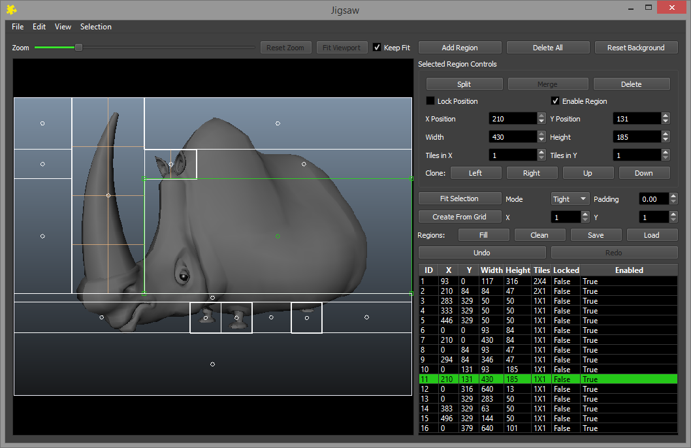

Submitting Jobs¶
Overview¶
The easiest and most common way to submit render jobs to Deadline is via our many submission scripts, which are written for each rendering application it supports. After you have submitted your job, you can monitor progress using the Monitor. See the Monitoring Jobs documentation for more information.
If you would like more control over the submission process, or would like to submit arbitrary command line jobs to Deadline, see the Manual Job Submission documentation for more information.
Integrated Submission Scripts¶
Where possible, we have created integrated submission scripts that allow you to submit jobs directly from the application you’re working with. These scripts are convenient because you don’t have to launch a separate application to submit the job. In addition, these scripts often provide more submission options because they have direct access to the scene or project file you are submitting.
See the Plugins documentation for more information on how to set up the integrated submission scripts (where applicable) and submit jobs for specific applications.
Monitor Submission Scripts¶
In cases where an application does not have an integrated submission script, you can submit the jobs from the Submit menu in the Monitor. Note that applications that have integrated submission scripts also have Monitor scripts here, but in most cases there are less options to choose from. This is because the integrated submission scripts use the application’s native scripting language to pull additional information from the file being submitted. See the Plugins documentation for more information on how submit jobs for specific applications.
You can also create your own submission scripts for the Monitor. Check out the Monitor Scripting documentation for more details.
Common Job Submission Options¶
There are many job options that can be specified on submission. A lot of these options are general job properties that aren’t specific to the application you’re rendering with. Some of these options are described below, many other options that are specific to the application that you’re rendering with. These are covered in each application’s plugin guide, which can be found in the Plugins documentation.
Job Name
The name of your job. This is optional, and if left blank, it will default to “Untitled”.
Comment
A simple description of your job. This is optional and can be left blank.
Department
The department you belong to. This is optional and can be left blank.
Pool and Group
The pool and group that the job belongs to. See the Job Scheduling documentation for more information on how these options affect job scheduling.
Priority
A job can have a numeric priority ranging from 0 to 100, where 0 is the lowest priority and 100 is the highest priority. See the Job Scheduling documentation for more information on how this option affects job scheduling.
Task Timeout and Auto Task Timeout
The number of minutes a Worker has to render a task for this job before an error is reported, and the task is requeued. Specify 0 for no limit.
If the Auto Task Timeout is properly configured in the Repository Options, then enabling the Auto Task Timeout option will allow a task timeout to be automatically calculated, which is based on the render times of previous frames for the job.
Concurrent Tasks and Limiting Tasks To A Worker’s Task Limit
The number of tasks that can render concurrently on a single Worker. This is useful if the rendering application only uses one thread to render and your Workers have multiple CPUs. Caution should be used when using this feature if your renders require a large amount of RAM.
If you limit the tasks to a Worker’s task limit, then by default, the Worker won’t dequeue more tasks then it has CPUs. This task limit can be overridden for individual Workers by an administrator. See the Worker Settings documentation for more information.
Machine Limit and Machine Allow List/Deny List
Use the Machine Limit to specify the maximum number of Workers that can render your job at one time. Specify 0 for no limit. You can also force the job to render on specific Workers by using an allow list, or you can avoid specific Workers by using a deny list. See the Limit Documentation for more information.
Limits
The limits that your job must adhere to. See the Limit Documentation for more information.
Dependencies
This job will not start until the specified existing job finishes rendering.
On Job Complete
If desired, you can automatically archive or delete the job when it completes.
Submit Job As Suspended
If enabled, the job will submit in the suspended state. This is useful if you don’t want the job to start rendering right away. Just resume it from the Monitor when you want it to render.
Scene/Project/Data File (if applicable)
The file path to the Scene/Project/Data File to be processed/rendered as the job. The file needs to be in a shared location so that the Worker machines can find it when they go to render it directly. See Submit Scene/Project File with Job below for a further option.
Note all external asset/file paths referenced by the Scene/Project/Data File should be resolvable by your Worker machines on your network.
Frame List
The list of frames to render. See the Frame List Formatting Options below for valid frame lists.
Frames Per Task
Also known as Chunk Size. This is the number of frames that will be rendered at a time, for each job task. Increasing the Frames Per Task can help alleviate some of the inherited overhead that comes with network rendering, but if your frames take longer than a couple of minutes to render, it is recommended that you leave the Frames Per Task at 1.
Submit Scene/Project File With Job
If this option is enabled, the scene or project file you want to render will be submitted with the job, and then copied locally to the Worker machine during rendering. The benefit to this is that you have a copy of the file in the state that it was in when it was submitted. However, if your scene or project file uses relative asset paths, enabling this option can cause the render to fail when the asset paths can’t be resolved.
Note, only the Scene/Project File is submitted with the job and ALL external/asset files referenced by the Scene/Project File are still required by the Worker machines.
If this option is disabled, the file needs to be in a shared location so that the Worker machines can find it when they go to render it directly. Leaving this option disabled is required if the file has references (footage, textures, caches, etc) that exist in a relative location.
Note if you modify the original file, it will affect the render job.
Draft and Integration Submission Options¶
The majority of the submission scripts that ship with Deadline have Integration options to connect to Shotgun, FTrack, NIM, and/or use Draft to perform post-rendering compositing operations. The Integration and Draft job options are essentially the same in every submission script, and more information can be found in their respective documentation:
Jigsaw¶
Jigsaw is a flexible multi-region rendering system for Deadline. This is available for 3ds Max, Maya, Houdini, modo, and Rhino. It can be used to render regions of various sizes for a single frame, and in 3ds Max and Maya, it can be used to track and render specific objects over an animation.
Draft can then be used to automatically assemble the regions into the final frame or frames. It can also be used to automatically composite re-rendered regions onto the original frame.
Jigsaw is built into the 3ds Max, Maya, Houdini, modo, and Rhino submitters. With the exception of 3ds Max, Jigsaw viewport will be displayed in a separate window.
The viewport can be used to create and manipulate regions. Regions are then submitted to Deadline to render. The available options are listed below:
General Options
These options are always available:
Add Region: Adds a new region.
Delete All: Deletes all the current regions.
Create From Grid: Creates a grid of regions to cover the full viewport. The X value controls the number of columns and the Y value controls the number of rows.
Fill Regions: Automatically creates new regions to fill the parts of the viewport that are not currently covered by a region.
Clean Regions: Deletes any regions that are fully contained within another region.
Undo: Undo the last change made to the regions.
Redo: Redo the last change that was previously undone.
Selected Regions Options
These options are only available when a single region is selected:
Clone: Creates a duplicate region parallel to the selected region in the specified direction.
Lock Postion: If enabled, the region will be locked to its current position.
Enable Region: If disabled, the region will be ignored when submitting the job.
X Position: The horizontal position of the selected region, taken from the left.
Y Position: The vertical position of the selected region, taken from the top.
Width: The width of the selected region.
Height: The height of the selected region.
These options are only available when one or more regions are selected.
Delete: Deletes the selected regions.
Split: Splits the selected regions into sub-regions based on the Tiles In X and Tyles In Y settings.
These options are only available when multiple regions are selected.
Merge: Combines the selected regions into a single region that covers the full area of the selected regions.
Zoom Options
These zoom options are always available:
Zoom Slider: Use the slider to zoom the viewport in and out. You can also use the mouse wheel to zoom in and out. If the image does not fit in the viewpoint, click the mouse wheel down to pan the image.
Reset Zoom: Resets the zoom within the viewport.
Fit Viewport: Zoom to see everything in the viewport.
Keep Fit: Zoom to see everything in the viewport, and force the viewport to not change. This allows the viewport to scale when resizing the Jigsaw window.
Maya Options
These options are currently only available for Maya:
Reset Background: Gets the current viewport image from Maya.
Fit Selection: Create regions surrounding the selected items in the Maya scene.
Mode: The type of regions to be used when fitting the selected items. The options are Tight (fitting the minimum 2D bounding box of the points) and Loose (fitting the minimum 2D bounding box of the bounding box of the object).
Padding: The amount of padding to add when fitting the selection (this is a percentage value that is added in each direction).
Save Regions: Saves the information in the regions directly into the Maya scene.
Load Regions: Loads the saved regions information from the Maya scene.
Frame List Formatting Options¶
During job submission, you usually have the option to specify the frame list you want to render, which often involves manually typing the frame list into a text box. In this case, you can make use of the following frame list formatting options.
Specifying Individual Frames or a Sequence
You can specify a single frame just by typing in the frame number:
5
You can specify individual frames by separating each frame with a comma or a space:
5,10,15,20
5 10 15 20
You can specify a frame range by separating the start and end frame with a dash or a colon:
1-100
1:100
Specifying a Sequence with a Step Frame
You can specify a step frame for a sequence using x, :, step, by, or every:
1-100x5
1:100:5
1-100step5
1-100by5
1-100every5
1:100:5
Each of these examples will render every 5th frame between 1 and 100 (1, 6, 11, 16, etc).
Specifying a Reverse Frame Sequence
You can specify a reverse frame range by separating the end frame and start frame with a dash:
100-1
Using a step frame also works for reverse frame sequences:
100-1x5
100:1:5
Advanced Frame Lists
Individual frames for the same job are never repeated when creating tasks for a job, which allows you to get creative with your frame lists without worrying about rendering the same frame more than once.
To render frames 5, 18, and then from 28 to 100, you can specify one of the following:
5,18,28-100
5 18 28-100
5,18,28:100
To render every 5th frame between 1 to 100, then fill in the rest, you can specify one of the following:
1-100x5,1-100
1-100x5 1-100
1:100:5,1:100
1:100:5 1:100
To render every 10th frame between 1 to 100, then every 5th frame, then every 2nd frame, then fill in the rest, you can specify one of the following:
1-100x10,1-100x5,1-100x2,1-100
1-100x10 1-100x5 1-100x2 1-100
1:100:10,1:100:5,1:100:2,1:100
1:100:10 1:100:5 1:100:2 1:100
To render in a mix of forward and reverse by different Nth frames, then fill in the rest in reverse, you can specify one of the following:
100-1x10,0-100x5,100-1
100-1x10 0-100x5 100-1
100:1:10,0:100:5,100:1
100:1:10 0:100:5 100:1
NOTE, a job’s frame range can be modified after a job has been submitted to Deadline by right-clicking on a job and selecting “Modify Frame Range…”.

{kind=link}
{kind=link}
{kind=link}
{kind=link}
{kind=link}